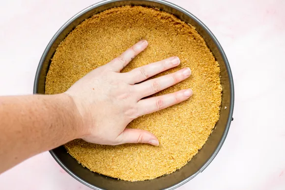
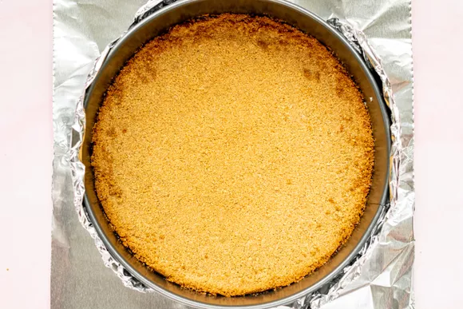
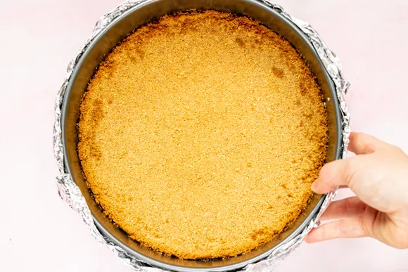

PREP TIME
20 mins
COOK TIME
2 hours 40 mins
CHILLING
4 hours
TOTAL TIME
7 hours
16 servings
NOTE: You'll need a 9 x 2-3/4-inch round springform pan for this recipe.
If you don’t want to mess with foil that may tear in the water bath, try using oven or slow cooker bags to protect the pan.
Recipe adapted from Dorie Greenspan's Baking: From My Home to Yours. Published with permission from author.
For the crust:
For the filling
For the sour cream topping
For the raspberry sauce
Preheat oven to 350°F (175°C), with rack in lower third of oven.
Pulse the graham crackers in a food processor or blender until finely ground. Put in a large bowl, and stir in the sugar and salt. Stir in the melted butter.
Use a 9” x 2-3/4” round springform pan. Gently press down on the crumbs using your fingers, until the crumbs are a nice even layer at the bottom of the pan, with maybe just a slight rise along the inside edges of the pan.
Place the pan on a baking sheet and bake at 350°F (175°C) for 10 minutes. Remove from the oven and let cool.
Lower the oven temperature to 325°F (160°C).
While the crust is cooling, you can skip ahead and start on the filling. Wait until the crust has cooled to wrap the pan in foil in the next step.
Prepare the springform pan, so no water leaks into it while cooking. Place a large 18-inch by 18-inch square of heavy duty aluminum foil on a flat surface.
Place the springform pan in the middle of the foil. Gently fold up the sides of the foil around the pan. Make sure to do this gently, so you don't create any holes in the foil.
If there are any holes, water will get into the pan and ruin the crust.
Press the foil around the edges of the pan. Place a second large square of foil underneath the pan, and repeat, gently folding up the sides of the foil around the pan and pressing the foil against the pan.
To be triply safe, repeat with a third layer of heavy duty foil. Gently crimp the top of the foil sheets around the top edge of the pan.
 